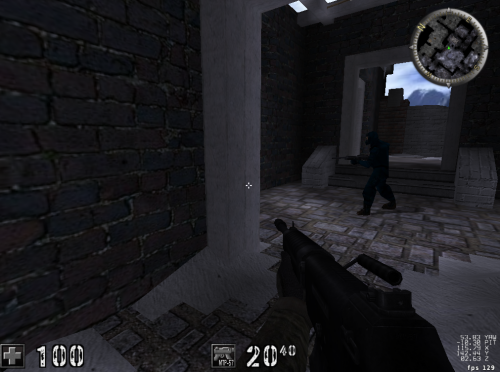
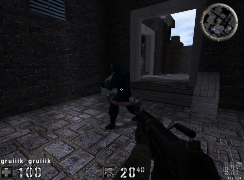
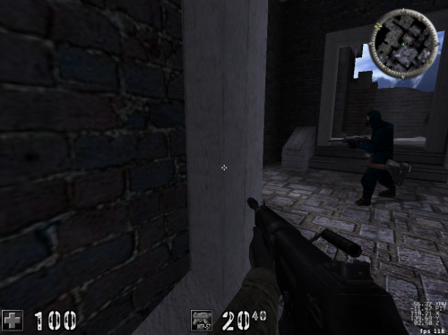
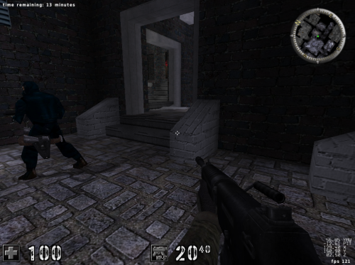

# ESP
ESP stands for Extra Sensory Perception.
An ESP hack displays player information around a player, such as their health, name, current weapon, etc.
and draws a box around the player to show them through walls.
You convert the enemy's 3D location in the world into a 2D position relative the player's view,
and draw text at that position to show where the enemy player is.
## 3D to 2D - Viewports
Here the enemy player has a 3D position in the world, represented by an x, y, and z coordinate.
However, the game needs to display this enemy on a 2D interface - our monitor.
To do this, it uses a static view of the world called a viewport.
The viewport can be tied to anything. In this FPS game, the viewport is tied to the player.
The viewport is used to determine where 3D objects should be displayed on a 2D screen.
A good way to visualize a viewport is to imagine a movie set.
When filming a movie, the set has actors, sound fixtures, lighting fixtures, and people and fixtures responsible for practical effects. However, none of this extra information is shown when you watch the movie, as the only view of this 3D world (the set) you have access to is the camera filming a specific section.
## Estimating Position
Assume that you are running Assault Cube in a window of 1024x768.
Depending on where your viewport is in the world,
the enemy will appear at certain pixel values when the scene is rendered.
In this case, the enemy is in the middle of our screen, or 1024 / 2.
This means that the enemy is at (roughly) the 512th pixel.
On the right, you could estimate the enemy at the 1000th pixel.
On the left, you could assume the enemy is the 100th pixel.
## World to Screen
## Virtual Screen
Games often use a "virtual" screen that will always be an identical size
regardless of the game's resolution.
## Developing Tips
Figure out how to calculate 1 value at a time:
• Calculate X first
• Then Y
• Then Z
Develop your hack for a single enemy first,
then add multiple enemies.